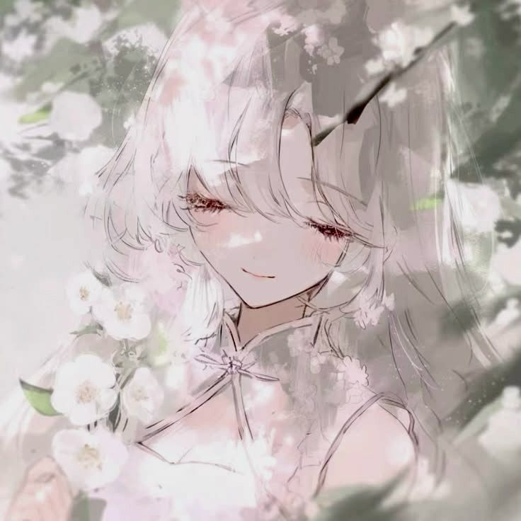

Environments & Maps
Creating explorable spaces, buildings and larger environments designed around the player's experience.
3D artist and modeler focused on creating imaginative game environments, models and worlds that are enjoyable to explore and play.

I've been working with 3D modelling for around two years, originally getting into it through my love of games. As I played more games, I became increasingly interested not only in how their worlds were created, but also in the small design issues that can affect the player's experience.
That pushed me towards creating my own work with a focus on building worlds that are visually interesting while still being enjoyable to play and explore.
I enjoy working across different areas of 3D creation rather than limiting myself to one type of asset. This includes environments, buildings, props, maps, accessories and the smaller details needed to bring a larger world together.
My preferred style is mid-to-low poly, where I have the creative freedom to experiment with shapes, environments and ideas while keeping assets suitable for games.
I enjoy working across different parts of the 3D creation process.
Creating explorable spaces, buildings and larger environments designed around the player's experience.
Building individual assets, props and environmental details that help make a world feel complete.
Working on accessories and other custom assets while experimenting with different ideas and visual styles.
What interests me about game creation is more than how something looks. I pay attention to the things that can make gameplay frustrating or less enjoyable and use that perspective when thinking about my own environments and assets. I want the worlds I create to have personality and visual detail without forgetting that they ultimately need to work as places people can actually enjoy playing in.
The main areas I'm currently working with and developing.
I'm continuing to develop my existing skills while also learning new software and techniques. I enjoy experimenting with different workflows and finding new ways to improve both the quality and efficiency of my work.
I'm available for freelance projects and commissions, including 3D models, props, environments, maps and other creative game-related work.